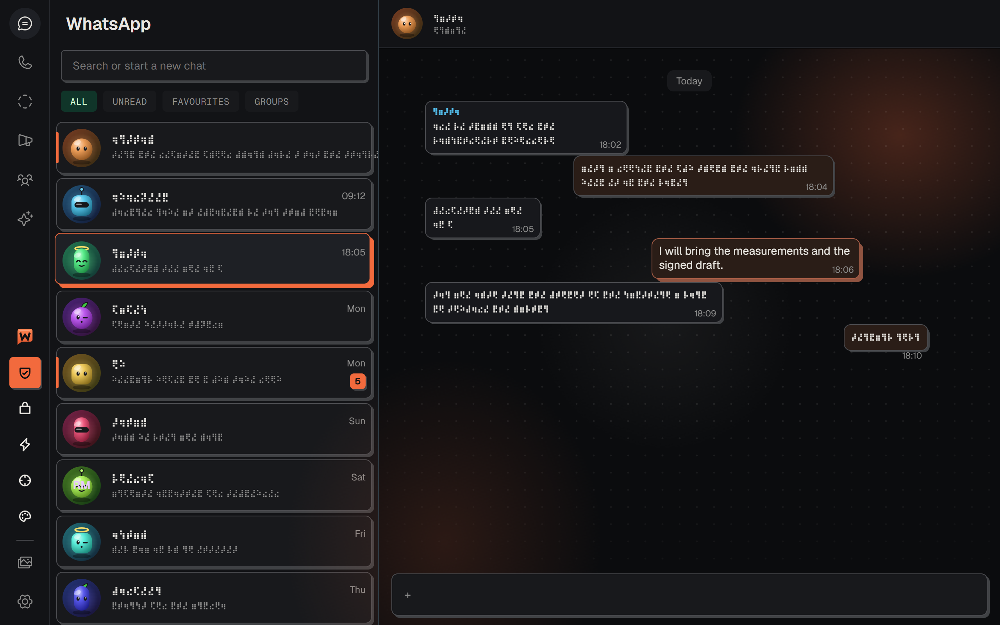
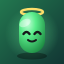
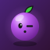
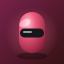
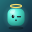
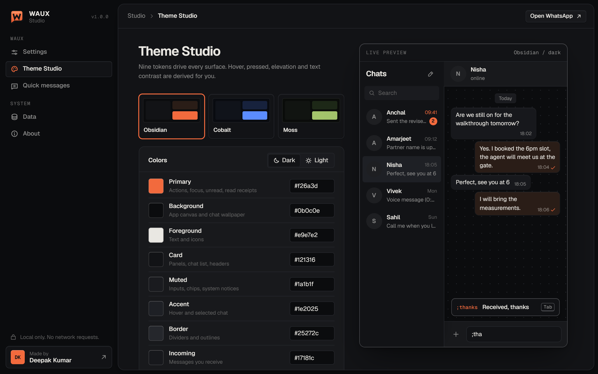

WhatsApp Web, redesigned.

Private by shape.
Messages, names and photos turn into cipher the moment someone looks over your shoulder. Hover to read. Hold Alt to read it all.




Nine tokens.
Every surface.
Hover, pressed, elevation and contrast are derived for you. Paste a tweakcn theme and go.

Keyboard first.
One palette for every action, chat and saved reply. Quick messages are inserted, never sent for you.
Network requests.
- Runs only onweb.whatsapp.com
- Your datastays in your browser
- Analyticsnone
- SourceMIT, on GitHub
Get WAUX.
- DownloadGrab
waux-1.0.0.zipfrom the latest GitHub release and unzip it. - LoadOpen
chrome://extensions, turn on Developer mode, click Load unpacked, pick the folder. - Open WhatsAppGo to web.whatsapp.com and press
Ctrl K.
Questions.
Can WAUX read or send my messages?
WAUX restyles the page in your own browser. It never stores, copies or uploads messages, and never sends anything. Quick messages are inserted into the box; you press send.
Is it safe for my WhatsApp account?
WAUX does not touch your account, encryption keys or WhatsApp's servers. It only changes how WhatsApp Web looks and adds keyboard shortcuts on your screen.
Is the Privacy Shield real security?
It is visual privacy, for people looking at your screen. Anyone with access to your browser profile or phone can still read your chats.
What happens when WhatsApp updates?
WAUX themes WhatsApp through its own design tokens and stable page hooks, so most updates pass unnoticed. A built-in compatibility check shows if something needs a fix.